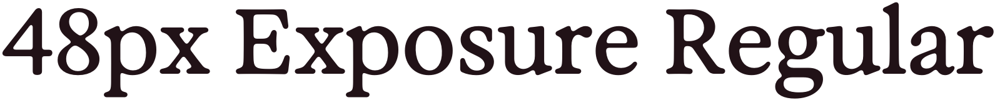
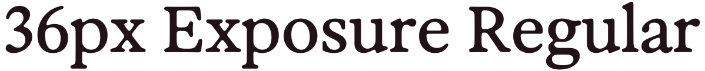

Text
To do21 HHFont tokens across 5 groups, in the shipped Inter and Exposure faces.
Headings6
| Token | Value | Notes | Source |
|---|---|---|---|
HHFont.heading1Dynamic Type · .largeTitle |  | .custom(name: HHExposureFont.regularName, size: HHExposureFont.heading1Size) | |
HHFont.heading1_5Dynamic Type · .largeTitle |  | The step between heading1 (48) and heading2 (30) — used for hero text like the home greeting where 48 overwhelms and 30 underplays. | .custom(name: HHExposureFont.regularName, size: HHExposureFont.heading1_5Size) |
HHFont.heading2Dynamic Type · .title1 | .custom(name: HHExposureFont.regularName, size: HHExposureFont.heading2Size) | ||
HHFont.heading3Dynamic Type · .title2 | .custom(name: HHExposureFont.regularName, size: HHExposureFont.heading3Size) | ||
HHFont.heading4Dynamic Type · .title3 | 20px Inter Semibold | .custom(name: "Inter-Regular_SemiBold", size: 20) | |
HHFont.heading5Dynamic Type · .title3 | 20px Inter Semibold | Design wants medium, but using semibold from ComponentsKit | UniversalFont.lgHeadline |
Paragraphs5
| Token | Value | Notes | Source |
|---|---|---|---|
HHFont.paragraph1BoldDynamic Type · .headline | Ag | UniversalFont.lgButton | |
HHFont.paragraph1SemiBoldDynamic Type · .body | Ag | Sits between paragraph1 (Regular) and paragraph1Bold (Medium) for emphasis. UniversalFont doesn't expose a SemiBold weight at this size, so this token references the registered Inter-Regular_SemiBold PostScript font directly through the same dynamicFont helper used by heading4. Dynamic-Type aware via relativeTo: .body. | .custom(name: "Inter-Regular_SemiBold", size: 16) |
HHFont.paragraph1Dynamic Type · .body | Ag | UniversalFont.lgBody | |
HHFont.paragraph2BoldDynamic Type · .body | Ag | UniversalFont.mdButton | |
HHFont.paragraph2Dynamic Type · .body | Ag | UniversalFont.mdBody |
Captions2
| Token | Value | Notes | Source |
|---|---|---|---|
HHFont.captionBoldDynamic Type · .subheadline | Ag | UniversalFont.smButton | |
HHFont.captionDynamic Type · .subheadline | Ag | UniversalFont.smBody |
Footnotes2
| Token | Value | Notes | Source |
|---|---|---|---|
HHFont.footnoteBoldDynamic Type · .caption2 | Ag | Using smButton as ComponentsKit has no 10px medium | UniversalFont.smButton |
HHFont.footnoteDynamic Type · .caption2 | Ag | UniversalFont.smCaption |
Parsed Markdown Headings6
| Token | Value | Notes | Source |
|---|---|---|---|
HHFont.markdownHeading1Dynamic Type · .title1 | Maps to design-system Heading 2 size | .custom(name: "Exposure+10-Regular", size: 30) | |
HHFont.markdownHeading2Dynamic Type · .title2 | Maps to design-system Heading 3 size | .custom(name: "Exposure+10-Regular", size: 24) | |
| HHFont.markdownHeading3Dynamic Type · inherited | Ag | Maps to design-system Heading 4 | HHFont.heading4 |
HHFont.markdownBodyDynamic Type · .body | Ag | Matching Android/web evidence body text (16px web ≈ 17pt on iOS) | .custom(name: "Inter-Regular", size: 17) |
HHFont.headlineDynamic Type · .headline | Ag | Sheet and navigation bar titles | .custom(name: "Inter-Regular_Medium", size: 17) |
HHFont.markdownBodyBoldDynamic Type · .body | Ag | Matching markdown strong emphasis | .custom(name: "Inter-Regular_Medium", size: 17) |